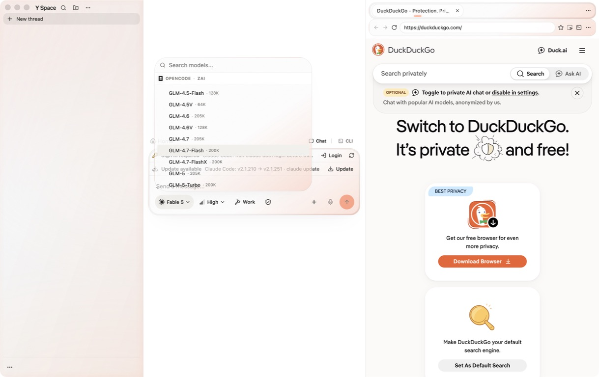

Readiness
YES
Clean worktree, green inherited baseline, live defect captured, fail-first contract written.
The live model picker is transparent, but the scene behind it remains sharp. This revision moves the visual contract into the shared desktop menu primitive so every responsive popup gets one bounded, visibly diffused glass surface.
The Select model surface passes light and color through, but words, icons, and edges
beneath the menu remain legible. The current generic .popover rule
therefore creates transparency without the visual diffusion in the supplied references.
Covered background detail must become an unreadable soft field while the model search, provider headings, model rows, and favorites remain sharp. A warm three-bloom color field, grain, lens, and rim should make the material visible even over Y Space’s near-white canvas.

y-space-popup-frost
Fresh branch and worktree from c95bb658; the repository checkout was not
switched.
11,126 passed
940 files passed, 6 skipped; 86 tests skipped. Native and Electron artifacts were prepared serially first.
Ready
Frozen install complete, Husky installed, ignored Pipedream environment retained without exposing values.
poracode-frosted-popover to every desktop
ResponsiveMenuSurface.
Every packaged QA action will use the exact revised app launched with the literal
--use-mock-keychain flag. One process will remain open between cases and for
the user’s follow-up testing. Normal release credential behavior is unchanged.